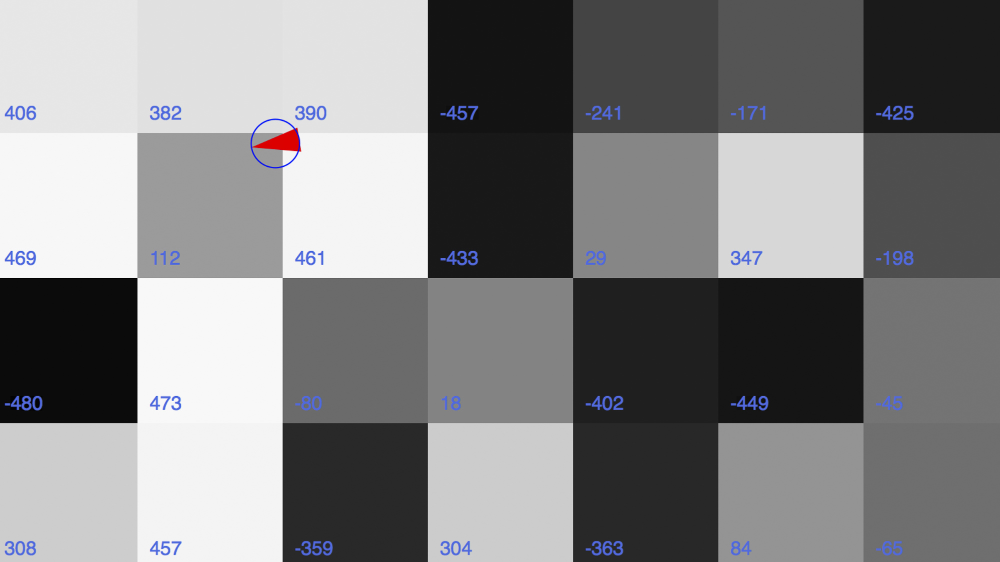
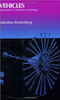

iLab Workshops
This semester iLab is trialling workshops in readiness for our official launch at the beginning of February 2017. To this end, we're starting with some one-day workshops aimed at understanding the algorithms and coding for some interesting yet everyday phenomena. The intention is that these workshops will inform and feed into further workshops in semester two that will focus on the making of tangible prototypes using Arduinos and other devices that we have in iLab.
To sign up for any of these trial workshops or to find out more, email Andy Lapham or just pop in to the ground floor of the South Building at WSA for a chat.
Understanding Flocking, Crowds and Queues
Tue 22 Nov 2016 : 10:00 - 16:00
This workshop looks at the behaviour seen in birds flocking and insects swarming. The basis for understanding the algorithms underpinning these behaviours is Craig Reynolds' seminal paper from 1987 "Flocks, Herds and Schools: A distributed behaviour model". The same algorithms can be used to model human behaviours such as crowds, queuing and fight/battle scenes.
Along the way, the workshop will include an introduction/refresher to browser-based scripting using JavaScript and make use of the p5.js framework to model the behaviours - p5.js is a re-imagining of the Processing language that enables simple coding of visual phenomena and motion to the web browser.
Who is this for?
This workshop will be of particular interest to BA Games Design and Art Students but anyone with a relevant interest in the flocking algorithms or the p5.js framework can sign up. The coding involved is not particularly complex but you will probably need to have some prior knowledge and experience of coding - not necessarily of JavaScript. You will also need to bring along a laptop armed with a text editor and a download of the p5.js library (details on these requirements will be sent to you after you sign up).
As this is a trial workshop for iLab, we are limiting places to ten this time around. You will also be asked to evaluate the workshop and contribute suggestions for further events.
Header image: from Reynold's 1987 paper.
Using online feeds for data visualisations
Tue 13 Dec 2016 : 10:00 - 16:00
This workshop looks at taking data feeds from the web and using those data as inputs to drive visualisation algorithms on screen. The workshop will include an introduction/refresher to browser-based scripting using JavaScript and make use of the p5.js framework to model the visualisations - p5.js is a re-imagining of the Processing language that enables simple coding of visual phenomena and motion to the web browser. This workshop does not progress past data visualisation on screen. A follow-up workshop looking at using live data to drive physical devices and prototypes will take place in semester two.
Who is this for?
This workshop will be of particular interest to MA Communication Design students but anyone with a relevant interest in web-based data visualisations can sign up. The coding involved is not particularly complex but you will probably need to have some prior knowledge and experience of coding - not necessarily of JavaScript. You will also need to bring along a laptop armed with a text editor and a download of the p5.js library (details on these requirements will be sent to you after you sign up).
As this is a trial workshop for iLab, we are limiting places to ten this time around. You will also be asked to evaluate the workshop and contribute suggestions for further events.
Header image: Stefan Sagmeister's Compass Table (Paris 2011).

Making a simple browser-based game
Thu 12 and Fri 13 Jan 2017 10:00 - 13:00
Taking place on two half days, this workshop uses the re-creation of a classic game using JavaScript and the p5.js framework as a case study for considering how such a game may be created from scratch. The p5.js framework is a JavaScript re-imagining of the Processing language that enables simple coding of visual phenomena and motion to the web browser.
Who is this for?
This workshop will be of particular interest to BA Games Design and Art Students but anyone with a relevant interest in game design/making or the p5.js framework can sign up. You will probably need to have some prior knowledge and experience of coding - not necessarily of JavaScript. You will also need to bring along a laptop armed with a text editor and a download of the p5.js library (details on these requirements will be sent to you after you sign up).
As this is a trial workshop for iLab, we are limiting places to ten this time around. You will also be asked to evaluate the workshop and contribute suggestions for further events.
Header image: Tetris screenshot.
Lunches

"Sort of like an inverse Weight Watchers with theory - we meet regularly to chew over texts relating to the fields of communications, computing, media and technology."
If you are interested in media, design, technology, humans or cyborgs this is a reading group that meets to discuss key thinkers, writers and makers... We sometimes eat food at the same time.
Anybody is welcome, ideally texts should be shortish, so chapters rather than books, journal articles better, or other types of content welcome. Currently running on Wednesday lunchtimes, seminars take place in the WSAiLab space T1005, ground floor South Building and last 1 hour.
The series opened with a discussion on Matt Ratto's 2011 paper on Critical Making.
The iLab Lunches are run by James Branch. See the iLab Lunches website for full details. Image and text on this page by James Branch.
Ideas
Vehicles
"Experiments in synthetic psychology"
In his 1984 book, Vehicles, Valentino Braitenberg proposes a number of thought experiments whereby ”vehicles, a series of hypothetical, self-operating machines that exhibit increasingly intricate if not always successful or civilised behaviour.” A leading brain researcher, Braitenberg uses his vehicles to gain insight into how the brain may have evolved.
The image on this page is an attempt to create Braitenberg’s simplest vehicle - one with a single sensor that governs its speed according to its environment. Click it to try it. In this example we can imagine the vehicle moving over a floor of tiles with varying frictional qualities, tiles coloured towards white exhibit positive friction i.e. they slow the vehicle down and tiles coloured towards black exhibit negative friction causing the vehicle to speed up. One can also imagine the vehicle having an affinity with light, in that it lingers in bright spaces and moves quickly through dark ones. This a thought experiment made real in software - in this case, JavaScript in a browser - it would be good to try to build a physical model of this and other, more complex multi-sensor examples of Braitenbergs vehicles.